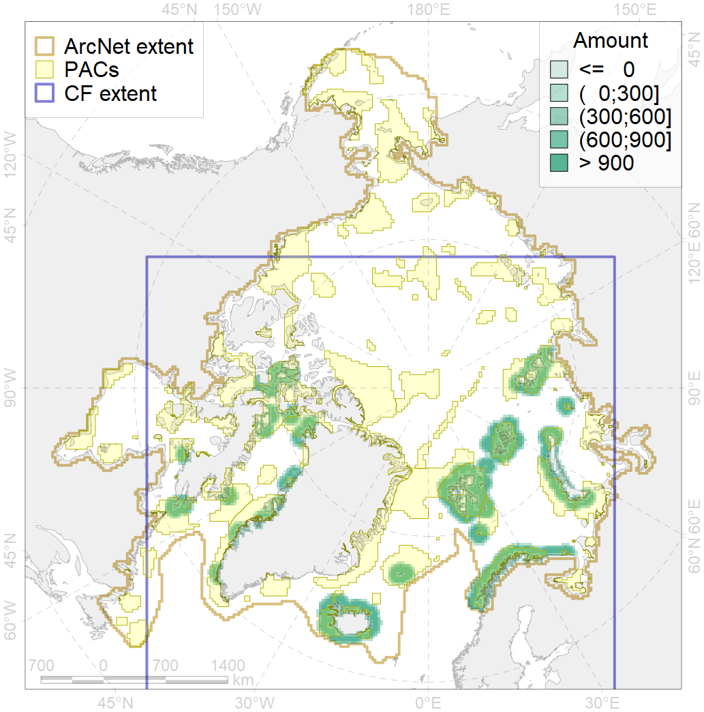
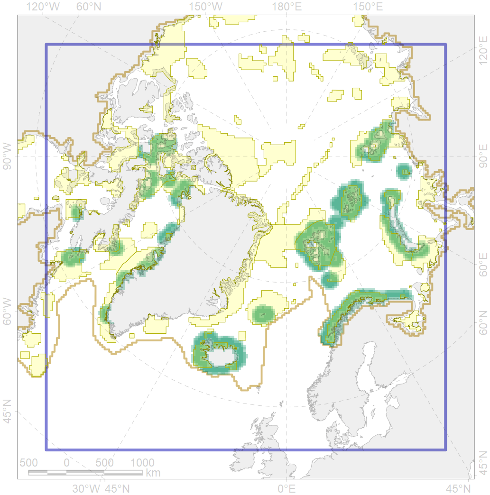

6099

| CF code | 6099 |
| CF name | Black-legged kittiwake (Rissa tridactyla tridactyla) breeding colonies buffer feeding area |
| Time Period | 1980-2004 |
| Source(s) | Circumpolar Seabird Data Portal http://axiom.seabirds.net/maps/js/seabirds.php?app=circumpolar#z=2&ll=NaN,0.00000 |
| Seasonality | May-September |
| Depth Horizon | ≥0 m |
| Methodology | Buffer around colonies |
| Use Restrictions | Open source |
| Author Name | Gavrilo, Tertitski |
| Notes | |
| Scenario’s Target | 0.648 |
| Target Achievement | 0.648 (Scenario: 100.0%) |
| PAC | Share of the Total Amount within the PAC | Share of the Target Achievement for the ArcNet | PAC’s Contribution to the Target Achievement |
|---|---|---|---|
| 14 | 6.0%6.1% | 8.1%8.1% | 8.1%8.1% |
| 15 | 0.3%0.4% | 0.3%0.3% | 0.3%0.3% |
| 19 | 1.6% | 2.2% | 2.2% |
| 20 | 1.7%1.8% | 2.6%2.7% | 2.6%2.7% |
| 21 | 3.5%3.6% | 4.9%5.1% | 4.9%5.1% |
| 22 | 5.0% | 7.3% | 7.3% |
| 25 | 0.1%0.2% | 0.2%0.3% | 0.2%0.3% |
| 27 | 6.4%7.1% | 8.8%9.4% | 8.8%9.4% |
| 29 | 0.5%1.0% | 0.8%1.6% | 0.8%1.6% |
| 30 | 10.1%10.8% | 15.1%16.2% | 15.1%16.2% |
| 31 | 2.3%2.6% | 3.3%3.8% | 3.3%3.8% |
| 34 | 3.3%3.3% | 5.1%5.1% | 5.1%5.1% |
| 37 | 0.3%0.4% | 0.2%0.3% | 0.2%0.3% |
| 38 | 3.0%3.2% | 4.0%4.2% | 4.0%4.2% |
| 39 | 0.6%0.7% | 0.8%0.9% | 0.8%0.9% |
| 40 | 0.1%0.1% | 0.1%0.2% | 0.1%0.2% |
| 41 | 0.5%0.6% | 0.5%0.6% | 0.5%0.6% |
| 44 | 3.1%3.6% | 4.6%5.1% | 4.6%5.1% |
| 45 | 0.8%0.9% | 1.1%1.4% | 1.1%1.4% |
| 46 | 0.7%1.0% | 1.0%1.5% | 1.0%1.5% |
| 48 | 0.2%0.2% | 0.3%0.3% | 0.3%0.3% |
| 49 | 0.1%0.1% | 0.1%0.1% | 0.1%0.1% |
| 51 | 2.8%3.3% | 4.2%4.9% | 4.2%4.9% |
| 52 | 6.7%7.0% | 10.0%10.4% | 10.0%10.4% |
| 65 | 0.1%0.1% | 0.1%0.1% | 0.1%0.1% |
| 73 | 0.8%0.9% | 1.2%1.2% | 1.2%1.2% |
| 76 | 2.8%2.8% | 4.0%4.1% | 4.0%4.0% |
| inner | 63.3%68.5% | 91.0%97.4% | 90.9%97.4% |
| outer | 36.7%42.8% | 9.1%17.3% | 9.1%17.2% |
| † supplement values are for area consistence whereas principal values are for Accenter compatible gridded stats |